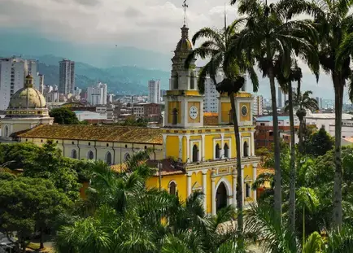

Universidad Libre
Facultad de Ingeneria
2026 Valery Diaz. Todos los derechos son reservados

"Bucaramanga: El pulmón del oriente y ejemplo de desarrollo sostenible" Conocida por su impecable planeación urbana y sus más de 200 parques, Bucaramanga es el centro neurálgico del departamento de Santander. En 2026, la ciudad se destaca no solo por su industria del calzado y la joyería, sino por ser un hub de servicios de salud y educación superior de alta calidad. Su clima privilegiado y su ubicación estratégica cerca del Cañón del Chicamocha la convierten en una parada obligatoria para el turismo de aventura y los negocios, manteniendo siempre ese equilibrio perfecto entre el crecimiento económico y el respeto por el espacio público que la caracteriza.
Según las cifras más recientes del DANE, el área metropolitana de Bucaramanga registró una tasa de desempleo del 7.2%, la más baja entre las principales capitales del país. Este fenómeno se debe al fuerte crecimiento del sector de servicios tecnológicos y la exportación de calzado hacia mercados europeos. El alcalde destacó que la clave ha sido la alianza entre la academia y el sector privado, permitiendo que los recién graduados de las universidades locales se enganchen rápidamente en empresas de desarrollo de software y servicios de ingeniería que operan desde la zona franca de Floridablanca.

Con una inversión de $15.000 millones de pesos, la Alcaldía de Bucaramanga dio inicio a las obras de remodelación del histórico Parque García Rovira y sus alrededores. El proyecto busca peatonalizar las vías que conectan la Gobernación con la Alcaldía y la Parroquia de San Laureano, creando un corredor turístico lleno de zonas verdes y fuentes interactivas. Esta obra es parte del plan de revitalización del Centro Histórico, que busca atraer de nuevo a las familias y fortalecer el comercio de los tradicionales locales de joyería y artesanías santandereanas.

Universidad Libre
Facultad de Ingeneria
2026 Valery Diaz. Todos los derechos son reservados